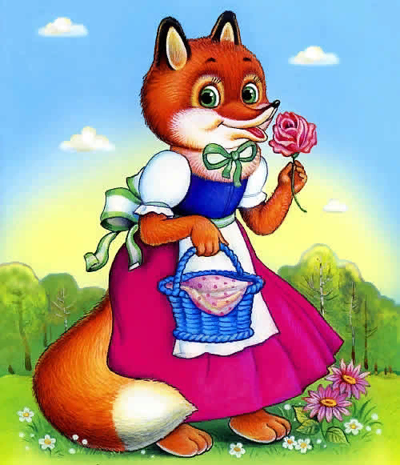

Как лиса училась летать

Встретился журавль с лисой:
— Что, лиса, умеешь ли ты летать?
— Нет, журавлик, не умею.
— А хочешь, научу, садись на меня полетаем вдвоем.
Села лиса на журавля. Унес ее журавль высоко-высоко в небо.
— Что, лиса, видишь землю?
— Плохо вижу: маленькой земля кажется!
Журавль ее и сбросил с себя.
Повезло лисе, упала она на мягкое место, на кучу сена.
Журавль подлетает, спрашивает:
— Ну, как лиса, научилась летать?
— Летать-то научилась — садиться больно тяжело!
— Садись еще поучу летать, второй раз садится проще.
Села лиса на журавля. Выше прежнего унес он ее и сбросил с себя.
Опять повезло лисе, упала она на болото, на три метра в землю ушла.
Еле выбралась лисица из болота. Обмылась лисица в ручье, и стала журавля искать, а его и след простыл.
Так лиса и не научилась летать. Поняла она, что обманывал её журавль.
С тех пор лиса с журавлём не дружит.
Лиса и журавль
Лиса с журавлем подружились.
Вот вздумала лиса угостить журавля, пошла звать его к себе в гости:
— Приходи, куманек, приходи, дорогой! Уж я тебя угощу!
Пошел журавль на званный пир. А лиса наварила манной каши и размазала по тарелке. Подала и потчевает:
— Покушай, голубчик куманек, — сама стряпала.
Журавль стук-стук носом по тарелке, стучал, стучал — ничего не попадает!
А лисица лижет себе да лижет кашу, так все сама и съела.
Кашу съела и говорит:
— Не обессудь, куманек! Больше потчевать нечем.
Журавль ей отвечает:
— Спасибо, кума, и на этом! Приходи ко мне в гости.
На другой день приходит лиса к журавлю, а он приготовил окрошку, наклал в кувшин с узким горлышком, поставил на стол и говорит:
— Кушай, кумушка! Право, больше нечем потчевать.
Лиса начала вертеться вокруг кувшина. И так зайдет, и эдак, и лизнет его, и понюхает-то, — никак достать не может: не лезет голова в кувшин.
А журавль клюет себе да клюет, пока все не съел.
— Ну, не обессудь, кума! Больше угощать нечем!
Взяла лису досада. Думала, что наестся на целую неделю, а домой пошла — не солоно хлебала. Как аукнулось, так и откликнулось!
С тех пор и дружба у лисы с журавлем врозь.